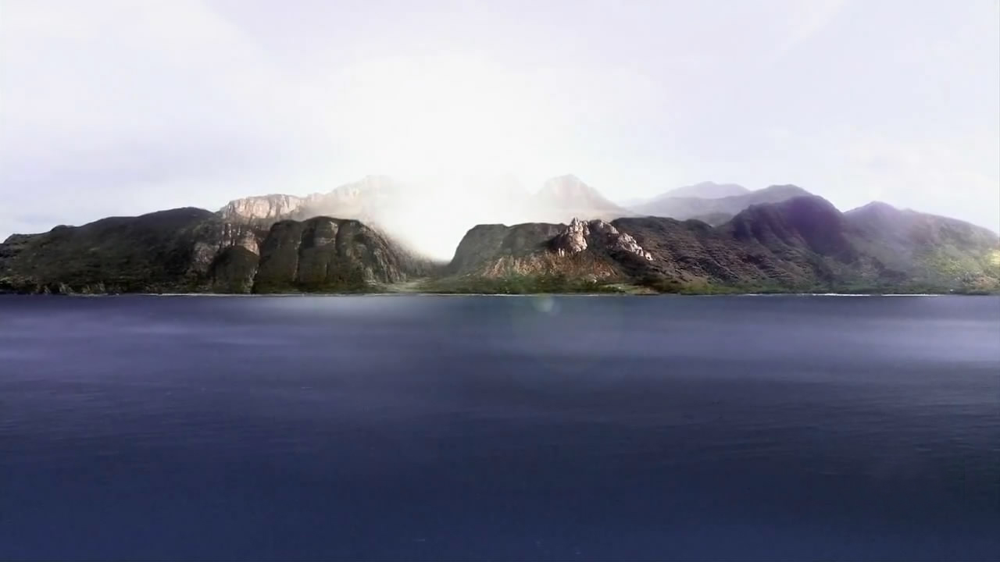

Principales misterios de la Isla
La Isla: Se convierte en un lugar con propiedades sobrenaturales, donde los supervivientes se enfrentan a fenómenos inexplicables, curaciones milagrosas y saltos en el tiempo.
El Humo Negro: Una enigmática y violenta entidad de humo negro que recorre la isla, capaz de juzgar y matar a sus habitantes. Su origen y propósito son uno de los mayores secretos.
Los Números (4 8 15 16 23 42): Una secuencia de números que aparece repetidamente a lo largo de la serie, desde el billete de lotería de Hurley hasta el código para evitar una catástrofe en la estación El Cisne.
La Escotilla: Una misteriosa escotilla metálica encontrada en la selva, que conduce a la estación subterránea El Cisne. Su propósito y el hombre que vive dentro, Desmond Hume, son un enigma central de la segunda temporada.
La Iniciativa DHARMA: Una misteriosa organización científica que llevó a cabo experimentos en la isla durante los años 70 y 80, dejando atrás estaciones de investigación abandonadas y un legado de preguntas sin respuesta.
Los Otros: Un grupo de habitantes de la isla que vivían allí mucho antes del accidente del vuelo 815. Liderados por Benjamin Linus, sus motivos y su historia son un misterio constante para los supervivientes.
Jacob y el Hombre de Negro: Dos figuras ancestrales y opuestas, responsables de atraer a la gente a la isla. Su conflicto es el corazón de la mitología de la serie y la lucha entre el bien y el mal.
Los Flash-Sideways: Una realidad alternativa presentada en la última temporada donde el vuelo 815 nunca se estrelló. El propósito de esta línea temporal es uno de los misterios más emotivos y filosóficos de la serie.